| BMI | C | E |
|---|---|---|
| 18.3 | 170 | 49 |
| 24.4 | 202 | 39 |
| 24.6 | 215 | 50 |
| 24.4 | 218 | 44 |
| 22.2 | 210 | 40 |
| 19.5 | 210 | 36 |
2 Análisis Multivariante
En general, los datos que se recogen en experimentos son multidimensionales: miden diversas variables aleatorias sobre una misma muestra de individuos. Esta información se organiza en tablas de datos con filas que representan a los individuos observados y cada columna corresponde a una variable diferente. Lo que hacemos es evaluar un vector de variables aleatorias (que llamaremos vector aleatorio) sobre los individuos de una población.
En esta parte vamos a introducir algunos conceptos sobre vectores de variables aleatorias y tablas multidimensionales de datos cuantitativos.
2.1 Poblaciones: vectores aleatorios
Un vector aleatorio de dimensión \(p\) es un vector formado por \(p\) variables aleatorias \[ \underline{X}=(X_1,X_2,\ldots,X_p). \] Una realización de \(\underline{X}\) es un vector \((x_1,\ldots,x_p)\) formado por los valores \(X_1,\ldots,X_p\) sobre un individuo.
Una muestra de \(\underline{X}\) es un conjunto de realizaciones.
Usualmente, organizamos una muestra de \(\underline{X}\) por medio de una tabla de datos con las columnas definidas por las variables \(X_1,\ldots,X_p\) y donde cada fila es una realización de estas variables, es decir, un vector formado por los valores de \(X_1,\ldots,X_p\) sobre un individuo de la muestra.
Ejemplo: Sea \(\textit{BMI}\) la variable aleatoria que registra el índice de masa corporal (BMI) de una persona, \(C\) la variable aleatoria que registra el nivel de colesterol en mg/dl de una persona y \(E\) la variable aleatoria que da la edad de una persona en años, entonces \[ \underline{X}=(\textit{BMI},C,E) \] es un vector aleatorio de dimensión 3. Cada vez que tomamos una persona y anotamos el BMI, el nivel de colesterol y la edad y organizamos estas medidas en este orden en un vector, obtenemos una realitzación de este vector aleatorio \(\underline{X}\). Entonces,una muestra de \(\underline{X}\) será un conjunto de vectores con el BMI, el nivel de colesterol y la edad de un grupo de personas de la población. Por ejemplo
Sean \(\underline{X}=(X_1,X_2,\ldots,X_p)\) un vector aleatorio y, \(\mu_i\) y \(\sigma_i\) la media y la desviación típica, respectivamente, de cada \(X_i\).
El valor esperado, o vector de medias, de \(\underline{X}\) es el vector formado por los valores esperados, o medias de sus componentes: \[ E(\underline{X})=(\mu_1,\ldots,\mu_p). \] Para abreviar, a veces indicaremos este vector simplemente con \(\boldsymbol\mu\).
El vector de varianzas de \(\underline{X}\) es el vector formado por las varianzas de sus componentes: \[ \sigma^2(\underline{X})=(\sigma_1^2,\ldots,\sigma_p^2). \]
El vector de desviaciones típicas de \(\underline{X}\) es el vector formado por las desviaciones típicas de sus componentes: \[ \sigma(\underline{X})=(\sigma_1,\ldots,\sigma_p). \]
2.2 Covarianza
La covarianza de dos variables \(X\) e \(Y\) es una medida del comportamiento conjunto de estas dos variables.
Formalmente, dadas dos variables aleatorias \(X,Y\) con medias \(\mu_X\) y \(\mu_Y\), respectivamente, su covarianza es \[ \sigma_{X,Y}=E\left((X-\mu_X)\cdot ( Y-\mu_Y)\right). \] Es fácil comprobar que \[ \sigma_{X,Y}=E(X\cdot Y) -\mu_X\cdot \mu_Y. \]
En efecto, \[ \begin{array}{rl} \sigma_{X,Y} & =E((X-\mu_X) ( Y-\mu_Y))= E(XY-\mu_XY-\mu_YX+\mu_X\mu_Y)\\ & =E(XY)-\mu_XE(Y)-\mu_YE(X)+\mu_X\mu_Y\\ &= E(XY)-\mu_X\mu_Y-\mu_Y\mu_X+\mu_X\mu_Y =E(XY)-\mu_X\mu_Y \end{array} \]
La covarianza de \(X\) e \(Y\) puede tomar cualquier valor real (no como la varianza, que siempre es positiva), y mide el grado de variación conjunta de las variables en el sentido sigüiente:
- \(\sigma_{X,Y}>0\) significa que cuando \(X\) es más grande en un individuo 1 que en un individuo 2, \(Y\) tiende también a ser más gran en el individuo 1 que en el individuo 2.
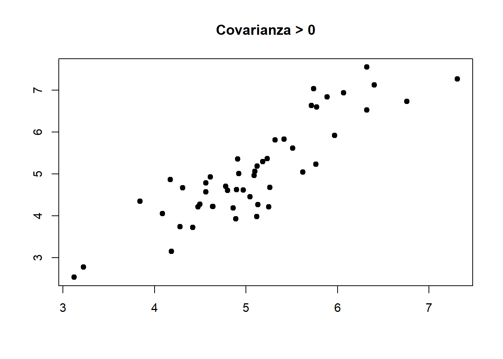
- \(\sigma_{X,Y}<0\) significa que cuando \(X\) es más grande en un individuo 1 que en un individuo 2, \(Y\) tiende a ser más pequeña en el individuo 1 que en el individuo 2.
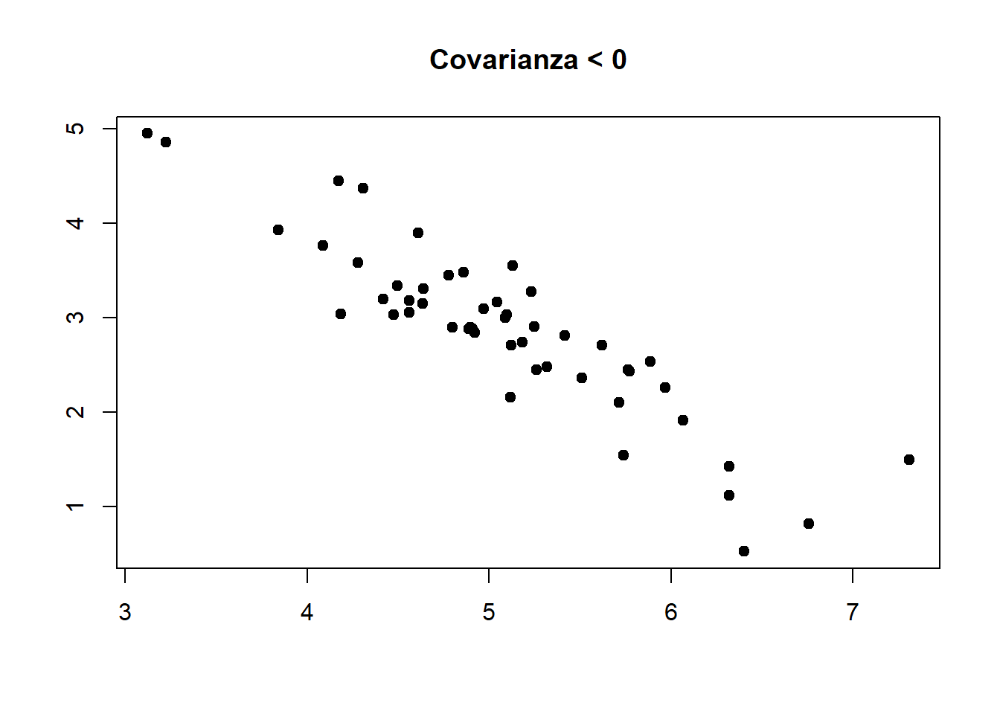
- \(\sigma_{X,Y}=0\) significa que no hay ninguna tendencia en este sentido.
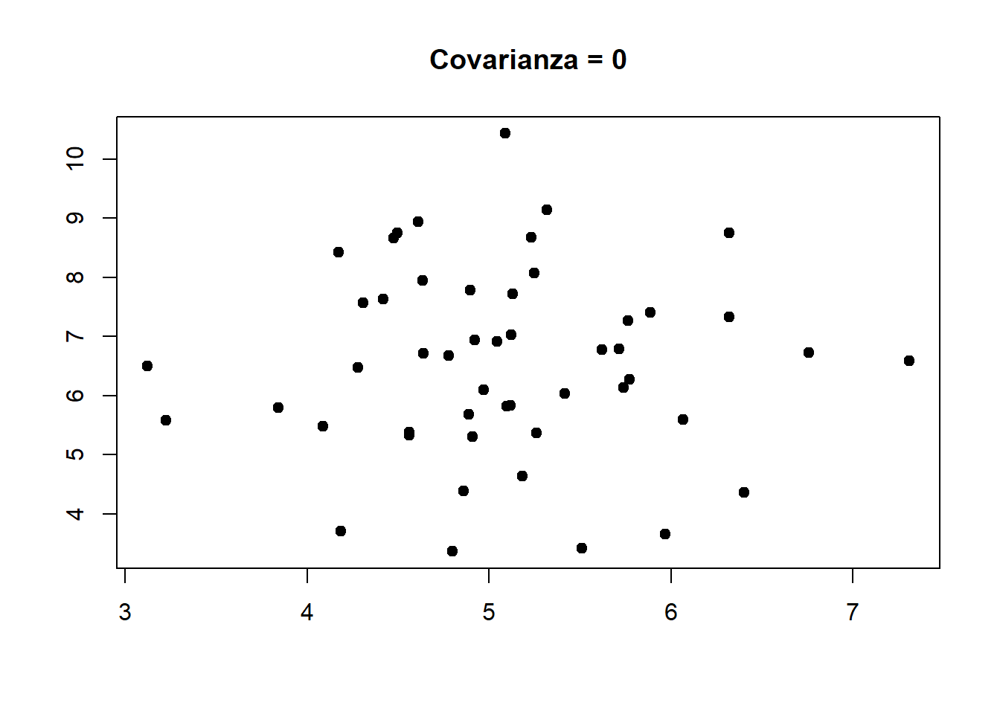
El signo de la covarianza refleja la “tendencia del crecimiento conjunto” de las variables:
Covarianza positiva significa la misma tendencia: Si \(X\) aumenta, \(Y\) tiende a aumentar. Esto suele expresarse diciendo que hay asociación positiva entre \(X\) e \(Y\).
Covarianza negativa significa la tendencia inversa: Si \(X\) aumenta, \(Y\) tiende a disminuir. Esto suele expresarse diciendo que hay asociación negativa entre \(X\) e \(Y\).
Si \(X\) e \(Y\) son variables independientes, su covarianza es 0, porque en este caso \(E(X\cdot Y) =\mu_X\mu_Y\) y por tanto \[ \sigma_{X,Y}=E(X\cdot Y) -\mu_X\cdot \mu_Y=\mu_X\cdot \mu_Y-\mu_X\cdot \mu_Y=0. \] Intuitivamente, si \(X\) e \(Y\) son independientes, significa que el hecho de que el valor de \(X\) aumente de un individuo a otro no tiene ningún efecto sobre el valor de \(Y\).
¿Por qué, si \(X\) e \(Y\) son independientes, \(E(X\cdot Y) =\mu_X\mu_Y\)?
Os lo demostraremos en el caso discreto; el argumento en el caso continuo es lo mismo cambiando sumatorios por integrales. \[ \begin{array}{rl} E(X\cdot Y)\!\!\! &\displaystyle =\sum_{x\in D_X,y\in D_Y} xyP(X=x,Y=y)\\ &\displaystyle =\sum_{x\in D_X,y\in D_Y} xyP(X=x)P(Y=y)\\ &\text{(por la independencia de $X$ e $Y$)}\\ &\displaystyle =\Big(\sum_{x\in D_X}xP(X=x)\Big)\Big(\sum_{y\in D_Y} yP(Y=y)\Big)=E(X)E(Y) \end{array} \]
Es importante remarcar que la igualdad \(E(X\cdot Y) =\mu_X\mu_Y\) es equivalente a la igualdad \(\sigma(X+Y)^2 =\sigma(X)^2+\sigma(Y)^2\) que decíamos que satisfacen las variables independientes. En efecto \[ \begin{array}{l} \sigma(X+Y)^2 -(\sigma(X)^2+\sigma(Y)^2)\\ \quad = E((X+Y)^2)-E(X+Y)^2-(E(X^2)-E(X)^2+E(Y^2)-E(Y)^2)\\ \quad = E(X^2+2XY+Y^2)-(E(X)+E(Y))^2\\ \qquad\qquad -E(X^2)+E(X)^2-E(Y^2)+E(Y)^2\\ \quad = E(X^2)+2E(XY)+E(Y^2)-E(X)^2-2E(X)E(Y)-E(Y)^2\\ \qquad\qquad -E(X^2)+E(X)^2-E(Y^2)+E(Y)^2\\ \quad = 2E(XY)-2E(X)E(Y)=2(E(XY)-\mu_X\mu_Y) \end{array} \] y por tanto \[ \sigma^2(X+Y) -(\sigma^2(X)+\sigma^2(Y))=0 \Longleftrightarrow E(XY)-\mu_X\mu_Y=0 \]
Si \(X\) e \(Y\) son variables independendientes, su covarianza es 0, pero la implicación al contrario es falsa: Dos variables aleatorias pueden tener covarianza 0 y no ser independientes.
Veamos un ejemplo de este hecho:
Supongamos que tenemos un dado tetraédrico no trucado con las caras marcadas con los valores -2, -1, 1 y 2. Sean \(X\) la variable aleatoria que consiste en llanzar el dado y anotar el resultado (la cara que queda en tierra), e \(Y\) la variable aleatoria que consite en lanzar el dado y anotar el cuadrado del resultado obtenido. Como las cuatro caras del dado son equiprobables, \[ \begin{array}{l} \displaystyle P(X=-2)=P(X=-1)=P(X=1)=P(X=2)=\frac{1}{4}\\ \displaystyle P(Y=1)=P(Y=4)=\frac{1}{2} \end{array} \]
Comp \(Y\) es función de \(X\), ya que \(Y=X^2\), \(X\) e \(Y\) no pueden ser independientes. Veamos que, en efecto, no lo son. Observad que los únicos posibles valores para el vector \((X,Y)\) en una tirada del dado son (-2,4), (-1,1), (1,1) y (2,4), cada uno con probabilidad 1/4. Entonces, por ejemplo, la probabilidad de obtener en una tirada \(X=-1\) i \(Y=4\) es 0, porque es imposible, mientras que \[ P(X=-1)\cdot P(Y=4)=\frac{1}{4}\cdot\frac{1}{2}=\frac{1}{8}\neq 0. \]
Veamos ahora que la covarianza de \(X\) e \(Y\) es 0. Para calcularla, primero necesitamos calcular los valores esperados de las variables: \[ \begin{array}{l} \displaystyle \mu_X=(-2)\cdot \frac{1}{4}+(-1)\cdot \frac{1}{4}+1\cdot \frac{1}{4}+2\cdot \frac{1}{4}=0\\ \displaystyle \mu_Y=1\cdot \frac{1}{2}+4\cdot \frac{1}{2}=2.5 \end{array} \] Por tanto \[ \begin{array}{l} \sigma_{X,Y}=E\big(X\cdot Y\big)-\mu_X\cdot \mu_Y=E\big(X\cdot Y\big)-0\cdot 2.5=E\big(X\cdot Y\big)\\ \qquad =P\big(X=-2,Y=4\big)\cdot (-2\cdot 4)+P\big(X=-1,Y=1\big)\cdot (-1\cdot 1)\\ \qquad\qquad\qquad +P\big(X=1,Y=1\big)\cdot (1\cdot 1)+P\big(X=2,Y=4\big)\cdot (2\cdot 4)\\ \qquad =\displaystyle \frac{1}{4}\cdot (-8)+\frac{1}{4}\cdot (-1)+\frac{1}{4}\cdot 1+\frac{1}{4}\cdot 8=0. \end{array} \] Así pues, \(X\) e \(Y\) son variables dependientes, pero su covarianza es 0.
Dos propiedades importantes más de la covarianza:
La covarianza es simétrica: \[ \begin{array}{rl} \sigma_{X,Y}\!\!\! & =E((X-\mu_X)\cdot ( Y-\mu_Y))\\ & =E(( Y-\mu_Y)\cdot (X-\mu_X))=\sigma_{Y,X} \end{array} \]
La covarianza de una variable aleatoria con ella misma es su varianza: \[ \sigma_{X,X}=E((X-\mu_X)^2)=\sigma^2(X) \]
La matriz de covarianzas de un vector aleatorio \(\underline{X}=(X_1,\ldots,X_p)\) es la matriz formada por las covarianzas de los pares de variables que la formen: \[ \sigma_{\underline{X},\underline{X}}=\begin{pmatrix} \sigma_{X_1,X_1} & \sigma_{X_1,X_2} & \ldots & \sigma_{X_1,X_p}\\ \sigma_{X_2,X_1} & \sigma_{X_2,X_2} & \ldots & \sigma_{X_2,X_p}\\ \vdots & \vdots &\ddots & \vdots\\ \sigma_{X_p,X_1} & \sigma_{X_p,X_2} & \ldots & \sigma_{X_p,X_p}\\ \end{pmatrix} \]
Esta matriz es simétrica y las entradas de la diagonal son las varianzas de las variables del vector, porque \(\sigma_{X_i,X_i}=\sigma^2_{X_i}\).
2.3 Correlación
Como hemos dicho, el signo de la covarianza tiene una interpretación sencilla, puesto que refleja la tendencia del crecimiento conjunto de las variables. Pero, su magnitud no tiene una interpretación sencilla.
Como alternativa, se puede medir la tendencia de que haya una relación lineal entre dos variables aleatorias continuas empleando el llamado coeficiente de correlación lineal de Pearson (o, para abreviar, la correlación), que viene a ser una versión normalizada de la covarianza.
En concreto, la correlación de las variables \(X\) e \(Y\) se define como el cociente de su covarianza entre el producto de sus desviaciones típicas: \[ \rho_{X,Y}=\frac{\sigma_{X,Y}}{\sigma_{X} \sigma_{Y}} \]
La correlación tiene las propiedades importantes siguientes:
No tiene unidades (porque las unidades de \(\sigma_X\) son las de \(X\), las unidades de \(\sigma_Y\) son las de \(Y\), y las unidades de \(\sigma_{X,Y}\) son las de \(X\) por las de \(Y\))
Toma valores entre -1 y 1: \(-1\leqslant \rho_{X,Y}\leqslant 1\)
Es simétrica, \(\rho_{X,Y}= \rho_{Y,X}\)
La correlación de una variable con ella misma es 1: \(\rho_{X,X}=1\)
\(\rho_{X,Y}=\pm 1\) si, y solo si, las variables \(X,Y\) tienen una relación lineal perfecta. Es decir, \(\rho_{X,Y}=\pm 1\) si, y solo si, existen \(a,b\in \mathbb{R}\) con \(a\neq 0\) y tales que \(Y= X+b\). La pendiente \(a\) de esta recta tiene el mismo signo que \(\rho_{X,Y}\).
Cuanto más se acerca \(|\rho_{X,Y}|\) a 1, más se acerca \(Y\) a ser función lineal de \(X\).
- Si \(\rho_{X,Y}>0\), la función es creciente
- Si \(\rho_{X,Y}<0\), la función es decreciente
- Si \(\rho_{X,Y}=0\), decimos que las variables \(X\) e \(Y\) son incorreladas. Notamos que la correlación es 0 si, y solo si, la covarianza es 0. Por lo tanto, si \(X\) y \(Y\) son independientes, también son incorreladas. El recíproco en general es falso.
Si una de las dos variables tiene desviación típica 0, en la fórmula de la correlación aparece un 0 en el denominador y no la podemos calcular. En este caso, se toma \(\rho_{X,Y}=0\). El motivo intuitivo es que una variable constante es siempre independiente de cualquier otra variable (haga lo que haga la otra, siempre toma el mismo valor) y hemos quedado que las variables independientes son incorreladas.
La matriz de correlaciones de un vector aleatorio \(\underline{X}=(X_1,\ldots,X_p)\) es la matriz formada por las correlaciones de pares de sus variables: \[ \rho(\underline{X}) =\begin{pmatrix} 1 & \rho_{X_1,X_2} & \ldots & \rho_{X_1,X_p}\\ \rho_{X_2,X_1} & 1 & \ldots & \rho_{X_2,X_p}\\ \vdots & \vdots & \ddots & \vdots\\ \rho_{X_p,X_1} & \rho_{X_p,X_2} & \ldots & 1\\ \end{pmatrix}. \] Esta matriz es simétrica por la simetría de la correlación.
La correlación de Pearson de dos variables continuas mide la tendencia de las variables a variar conjuntamente de manera lineal. En particular, por ejemplo, si \(\rho_{X,Y}>0\), \(Y\) tiende a crecer cuando \(X\) crece. Pero esto no significa que un aumento del valor de \(X\) cause que el valor de \(Y\) tienda a aumentar:
Correlación no implica causalidad!
La tendencia al crecimiento simultáneo de \(X\) y \(Y\) se puede deber a una tercera variable que las haga crecer las dos, o puede ser puramente espuria.
Si entráis a la página web Spurious Correlations podréis explorar un montón de correlaciones espurias. Nuestra preferida es una correlación de 0.947 entre la variable \(X\)= “Tomo un año y anoto el consumo per capita* de queso en los EE. UU.” e \(Y\)= “Tomo un año y anoto el número de muertes por estrangulamiento accidental con las sábanas de la cama en los EE. UU.”.
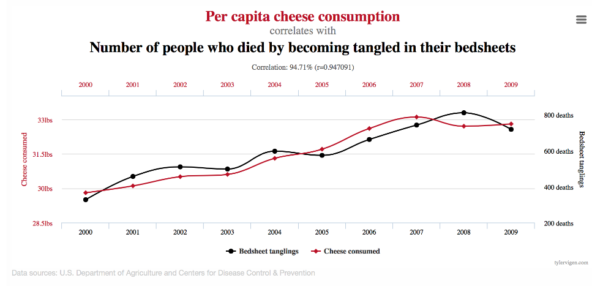
Hay un ejemplo de correlación negativa que es importante tener presente para no dejarse engañar.
Teorema: Si \(X_1\), \(X_2\) son dos copias independientes de una misma variable aleatoria \(X\), \[ \rho_{X_1,X_2-X_1}=-\frac{1}{\sqrt{2}}\approx -0.71 \]
Esto nos dice que, sea cual sea la variable \(X\), si la medimos en dos momentos independientes o sobre dos individuos elegidos de manera independiente, la diferencia entre los dos valores tiene una tendencia destacada a decrecer linealmente en el primer valor. Por ejemplo:
Hacéis un test y sacáis una nota muy baja (\(X_1\)). El día siguiente hacéis otro test similar (\(X_2\)) sin haber estudiado más. Lo más probable es que, por puro azar, saques una nota más alta (que \(X_2-X_1\) sea grande, por lo tanto positivo).
Hacéis un test y sacáis una nota muy alta (\(X_1\)). El día siguiente hacéis otro test (\(X_2\)) sin haber estudiado más. Lo más probable es que, por puro azar, saques una nota más baja (que \(X_2-X_1\) sea pequeño, por lo tanto negativo).
Por si alguno necesita una demostración del teorema anterior, recordamos que \[ \rho_{X_1,X_2-X_1}=\dfrac{\sigma_{X_1,X_2-X_1}}{\sigma_{X_1}\sigma_{X_2-X_1}} \] Ahora \[ \begin{array}{l} \sigma_{X_2-X_1}=\sqrt{\sigma^2_{X_2-X_1}}\\[2ex] \quad =\sqrt{\sigma^2_{X_1}+\sigma^2_{X_2}}\ \text{(porque son independientes)}\\[2ex] \quad =\sqrt{\sigma^2_{X}+\sigma^2_{X}}\ \text{(porque $X_1,X_2$ son copias de $X$)}\\[2ex] \quad =\sqrt{2\sigma^2_{X}}=\sigma_{X}\sqrt{2} \end{array} \] Luego, \[ \begin{array}{l} \sigma_{X_1,X_2-X_1}=E(X_1(X_2-X_1))-E(X_1)E(X_2-X_1)\\[1ex] \quad =E(X_1X_2-X_1^2)-E(X_1)(E(X_2-E(X_1))\\[1ex] \quad =E(X_1X_2)-E(X_1^2)-E(X_1)E(X_2)+E(X_1)E(X_1)\\[1ex] \quad =E(X_1)E(X_2)-E(X_1^2)-E(X_1)E(X_2)+E(X_1)E(X_1)\\[1ex] \quad \text{(porque $X_1,X_2$ son independents)}\\[1ex] \quad =-E(X_1^2)+E(X_1)E(X_1)=-\sigma^2_{X_1}=-\sigma^2_{X} \end{array} \]
Combinando lo anterior: \[ \rho_{X_1,X_2-X_1}=\dfrac{\sigma_{X_1,X_2-X_1}}{\sigma_{X_1}\sigma_{X_2-X_1}}=\dfrac{-\sigma^2_{X}}{\sigma_{X}\cdot \sigma_{X}\sqrt{2}} =-\frac{1}{\sqrt{2}} \]
Como ejemplo, generaremos una muestra \(X\) de 101 “notas” aleatorias entre 0 y 100 con distribución binomial \(B(100,0.5)\). Tomaremos como \(X_1\) el vector de las primeras 100 notas, \[ X_1=(x_1,x_2,\ldots,x_{100}) \] y como \(X_2-X_1\) el vector de las diferencias de cada nota \(x_y\), \(y\geqslant 2\), con la anterior: \[ X_2-X_1=(x_2-x_1,x_3-x_2,\ldots,x_{101}-x_{100}). \] Calcularemos la correlación entre \(X_1\) y \(X_2-X_1\), y lo ilustraremos con un gráfico.
X=rbinom(101,100,0.5)
X1=X[-101]
X2.menos.X1=diff(X)
plot(X1,X2.menos.X1,pch=20,xlab=expression(X[1]),
ylab=expression(X[2]-X[1]))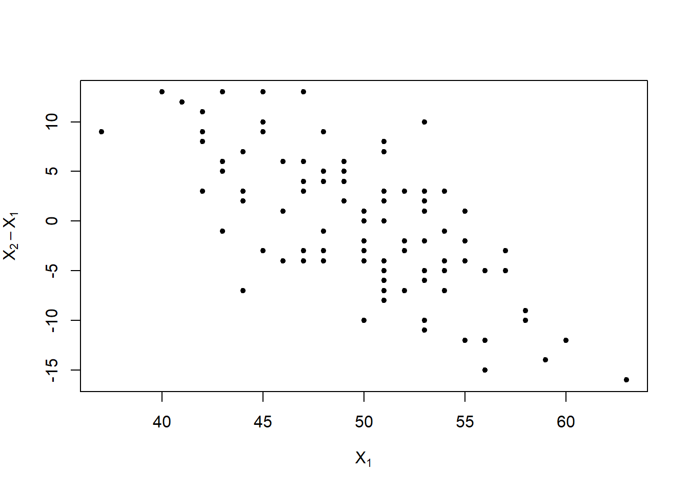
cor(X1,X2.menos.X1)[1] -0.7068097La correlación predicha por el teorema anterior es
-1/sqrt(2) [1] -0.70710682.4 Estadística descriptiva: Muestras
2.4.1 Covarianza
Sean \(X=(x_1,\ldots,x_n)\) y \(Y=(y_1,\ldots,y_n)\) dos vectores obtenidos de mediciones de dos variables aleatorias cuantitativas sobre una misma muestra ordenada de individuos de tamño \(n\) de una población. Sean \(\overline{X}\) y \(\overline{Y}\) sus medias muestrales. Entonces su covarianza muestral es \[ \widetilde{S}_{X,Y} =\frac{1}{n-1} \sum_{i =1}^n\big((x_{i}-\overline{{X}})(y_i-\overline{Y})\big) \] y su covarianza (a secas) es \[ {S}_{X,Y} =\frac{1}{n} \sum_{i =1}^n\big((x_{i}-\overline{{X}})(y_i-\overline{Y})\big)=\frac{n-1}{n}\widetilde{S}_{X,Y}. \] Es decir, la diferencia entre la versión “muestral” y la versión “a secas” recae en el denominador, \(n-1\) y \(n\) respectivamente.
La covarianza de dos vectores solo tiene sentido cuando estos vectores representan los valores de dos variables cuantitativas sobre los mismos individuos, o sobre dos muestras emparejadas, y en el mismo orden. En particular, los dos vectores tienen que tener la misma longitud.
Como en el caso poblacional, la covarianza entre dos vectores mide la tendencia que tienen los datos a variar conjuntamente:
Cuando \(\widetilde{S}_{X,Y}>0\), si \(x_i>x_j\) entonces \(y_i\) tiende a ser más grande que \(y_j\)
Cuando \(\widetilde{S}_{X,Y}<0\), si \(x_i>x_j\) entonces \(y_i\) tiende a ser más pequeño que \(y_j\)
Cuando \(\widetilde{S}=0\), no hay ninguna tendencia en este sentido
Es fácil comprobar que:
- Las dos covarianzas son simétricas \[ \widetilde{S}_{X,Y}=\widetilde{S}_{Y,X},\ {S}_{X,Y}={S}_{Y,X} \]
- La varianza de un vector es su covarianza con él mismo \[ \widetilde{S}_{X,X}=\widetilde{S}^2_{X},\ {S}_{X,X}={S}^2_{X}. \]
Ejemplo
Hemos medido el índice de masa corporal, BMI, y el nivel de colesterol en 5 individuos sanos. Guardamos los resultados en un dataframe y calculamos las medias:
BMI= c(18.3,24.4,24.6,24.4,22.2,19.5)
Chol=c(170,202,215,218,210,210)
DF=data.frame(BMI,Chol)
mean(BMI)[1] 22.23333mean(Chol)[1] 204.1667Entonces la covarianza muestral de estos dos vectores es \[ \begin{array}{l} \dfrac{1}{5}\Big((18.3-22.23)(170-204.17)+(24.4-22.23)(202-204.17)\\ \qquad +(24.6-22.23)(215-204.17)+(24.4-22.23)(218-204.17)\\ \qquad +(22.2-22.23)(210-204.17)+(19.5-22.23)(210-204.17)\Big)=33.8333 \end{array} \]
Entonces la covarianza muestral de estos dos vectores es \[ \begin{array}{l} \dfrac{1}{6}\Big((18.3-22.23)(170-204.17)+(24.4-22.23)(202-204.17)\\ \qquad +(24.6-22.23)(215-204.17) +(24.4-22.23)(218-204.17)\\ \qquad +(22.2-22.23)(210-204.17)+(19.5-22.23)(210-204.17)\Big)=28.1944 \end{array} \]
La covarianza muestral de dos vectores numéricos de la misma longitud \(n\) se calcula en R con la función cov.
cov(BMI,Chol)[1] 33.83333Para obtener su covarianza a secas, hay que multiplicar el resultado de cov por \((n-1)/n\).
n=length(BMI)
cov(BMI,Chol)*(n-1)/n[1] 28.19444Consideramos una tabla de datos cuantitativos de la forma \[ \begin{array}{cccc} X_1 & X_2 & \ldots & X_p\\ \hline x_{1 1} & x_{1 2} &\ldots & x_{1 p}\\ x_{2 1} & x_{2 2} &\ldots & x_{2 p}\\ \vdots & \vdots & \ddots &\vdots\\ x_{n 1} & x_{n 2} &\ldots & x_{n p} \end{array} \] donde cada columna representa los valores de cierta variable \(X_i\) y cada fila un individuo de una muestra de la población, de forma que la entrada \(x_{ij}\) de esta tabla es el valor de \(X_j\) sobre el individuo \(i\)-ésimo de la muestra.
La matriz de covarianzas muestrales de esta tabla es la matriz \[ \widetilde{{S}}= \begin{pmatrix} \widetilde{S}^2_{X_1} & \widetilde{S}_{X_1,X_2} & \ldots & \widetilde{S}_{X_1,X_p}\\ \widetilde{S}_{X_2,X_1} & \widetilde{S}^2_{X_2} & \ldots & \widetilde{S}_{X_2,X_p}\\ \vdots & \vdots & \ddots & \vdots\\ \widetilde{S}_{X_p,X_1} & \widetilde{S}_{X_p,X_2} & \ldots & \widetilde{S}^2_{X_p} \end{pmatrix} \] y la matriz de covarianzas (a secas) se define de manera similar, pero con las covarianzas a secas: \[ {S}= \begin{pmatrix} S^2_{X_1} & S_{X_1,X_2} & \ldots & S_{X_1,X_p}\\ S_{X_2,X_1} & S^2_{X_2} & \ldots & S_{X_2,X_p}\\ \vdots & \vdots & \ddots & \vdots\\ S_{X_p,X_1} & S_{X_p,X_2} & \ldots & S^2_{X_p} \end{pmatrix} \] Las dos son simétricas.
La matriz de covarianzas muestrales se calcula con la función cov aplicada a la matriz o al data frame de variables numéricas que almacena la tabla de datos. Para calcular la matriz de covarianzas a secas, se multiplica el resultado de cov por \((n-1)/n\), donde \(n\) es el número de filas de la tabla.
Ejemplo
Añadiremos a los datos del ejemplo anterior una tercera variable con las edades de los 5 individuos.
DF$Edad=c(49,39,50,44,40,36)
DF BMI Chol Edad
1 18.3 170 49
2 24.4 202 39
3 24.6 215 50
4 24.4 218 44
5 22.2 210 40
6 19.5 210 36La matriz de covarianzas muestrales de esta tabla es
cov(DF) BMI Chol Edad
BMI 7.586667 33.83333 1.14
Chol 33.833333 309.76667 -33.00
Edad 1.140000 -33.00000 32.00Podréis observar que es simétrica, que la entrada (2,1) coincide con la covarianza de BMI y Chol que hemos calculado antes, y que en la diagonal obtenemos las varianzas muestrales de las variables de la tabla:
apply(DF,MARGIN=2,FUN=var) BMI Chol Edad
7.586667 309.766667 32.000000 2.4.2 Correlación de Pearson
Sean \(X=(x_1,\ldots,x_n)\) e \(Y=(y_1,\ldots,y_n)\) dos vectores obtenidos midiendo dos variables aleatorias continuas sobre una misma muestra de individuos de medida \(n\) de una población.
La correlación de Pearson de \(X\) e \(Y\) es su covarianza muestral dividida por el producto de sus desviaciones típicas muestrales: \[ R_{X,Y}=\frac{\widetilde{S}_{X,Y}}{\widetilde{S}_X\cdot \widetilde{S}_Y}. \]
La correlación de Pearson de \(X\) e \(Y\) también es igual a su covarianza a secas dividida por el producto de sus desviaciones típicas a secas, porque los cambios de denominador se cancelan: \[ R_{X,Y}=\frac{\widetilde{S}_{X,Y}}{\widetilde{S}_X\cdot \widetilde{S}_Y}= \frac{\frac{n}{n-1}\cdot {S}_{X,Y}}{\sqrt{\frac{n}{n-1}}\cdot {S}_X \cdot\sqrt{\frac{n}{n-1}}\cdot{S}_Y}= \frac{S_{X,Y}}{S_X \cdot S_Y}=R_{X,Y}. \]
Ejemplo
Volvemos a la situación del ejemplo anterior. La covarianza muestral y las desviaciones típicas muestrales de los vectores BMI y Chol son
cov(BMI,Chol)[1] 33.83333sd(BMI)[1] 2.75439sd(Chol)[1] 17.60019y por tanto su correlación de Pearson es \[ R_{BMI,Chol}=\frac{33.833}{2.754\cdot 17.6}= 0.698 \]
Algunas propiedades importantes de la correlación de Pearson:
La correlación de Pearson es simétrica: \[ R_{X,Y}=R_{Y,X} \]
La correlación de Pearson toma valores solo entre -1 y 1: \[ -1\leqslant R_{X,Y}\leqslant 1 \]
La correlación de Pearson de un vector con él mismo es 1: \[ R_{X,X}=1 \]
\(R_{X,Y}\) tiene el mismo signo que \(S_{X,Y}\), y por tanto este signo tiene el mismo significado que a la covarianza:
Si \(R_{X,Y}>0\) y si \(x_i>x_j\), \(y_i\) tiende a ser más grande que \(y_j\)
Si \(R_{X,Y}<0\) y si \(x_i>x_j\), \(y_i\) tiende a ser más pequeño que \(y_j\)
Si \(R=0\), no hay ninguna tendencia en este sentido
\(R_{X,Y}=\pm 1\) si, y solo si, todos los puntos \((x_i,y_i)\) están sobre una recta \(y=ax+b\) con \(a\neq 0\). La pendiente \(a\) de esta relación lineal tiene el mismo signo que \(R_{X,Y}\). Por lo tanto, la recta es creciente si \(R_{X,Y}=1\) y decreciendo si \(R_{X,Y}=- 1\).
El coeficiente de determinación \(R^2\) de la regresión lineal por mínimos cuadrados de \(Y\) respecto de \(X\) es igual al cuadrado de su correlación de Pearson: \[ R^2=R_{X,Y}^2 \]
Por lo tanto, cuanto más se acerca la correlación de Pearson de \(X\) e \(Y\) a 1 o a -1, más se acercan los puntos \((x_i,y_i)\) a estar sobre una recta. El signo de \(R_{X,Y}\) indica si esta recta es creciente (\(R_{X,Y}>0\)) o decreciendo (\(R_{X,Y}<0\)).
Como en el caso poblacional, cuando uno de los vectores es constante, la correlación es igual a 0.
Con R, la correlación de Pearson de dos vectores se puede calcular con la función cor. Por ejemplo, la correlación del Pearson de los vectores BMI y Chol se obtiene con
cor(BMI,Chol)[1] 0.6979141Veamos que su cuadrado es igual al \(R^2\) de la regresión lineal de Chol en función de BMI:
cor(BMI,Chol)^2[1] 0.487084summary(lm(Chol~BMI))$r.squared[1] 0.487084Para hacernos una idea de qué representa este valor de la correlación, veamos el gráfico de los puntos (BMI,Chol) con su recta de regresión lineal:
plot(BMI,Chol,pch=20)
abline(lm(Chol~BMI),col="red",lwd=1.5)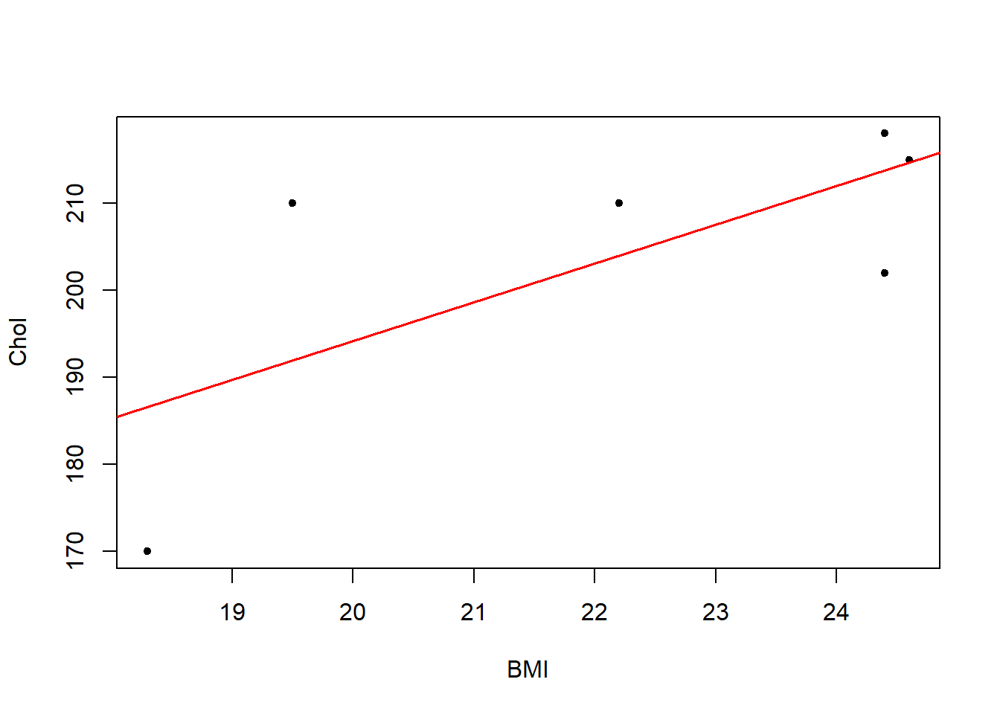
Podemos observar como Chol tiende a crecer cuando BMI crece, pero los puntos (BMI,Chol) no tienden a estar sobre una recta.
Cuidado Es conveniente acompañar el cálculo de correlación o covarianza de dos vectores \(x,y\) con un gráfico de los puntos \((x_i,y_i)\), porque conjuntos muy diferentes de puntos pueden dar lugar a la misma correlación.
Un ejemplo clásico de este hecho son los cuatro conjuntos de datos \((x_{1,i},y_{1,i})_{i=1,\ldots,11}\), \((x_{2,i},y_{2,i})_{i=1,\ldots,11}\), \((x_{3,i},y_{3,i})_{i=1,\ldots,11}\), \((x_{4,i},y_{4,i})_{i=1,\ldots,11}\) que forman el dataframe anscombe de R:
str(anscombe)'data.frame': 11 obs. of 8 variables:
$ x1: num 10 8 13 9 11 14 6 4 12 7 ...
$ x2: num 10 8 13 9 11 14 6 4 12 7 ...
$ x3: num 10 8 13 9 11 14 6 4 12 7 ...
$ x4: num 8 8 8 8 8 8 8 19 8 8 ...
$ y1: num 8.04 6.95 7.58 8.81 8.33 ...
$ y2: num 9.14 8.14 8.74 8.77 9.26 8.1 6.13 3.1 9.13 7.26 ...
$ y3: num 7.46 6.77 12.74 7.11 7.81 ...
$ y4: num 6.58 5.76 7.71 8.84 8.47 7.04 5.25 12.5 5.56 7.91 ...Las correlaciones de los cuatro pares de vectores son muy parecidas:
cor(anscombe$x1,anscombe$y1)[1] 0.8164205cor(anscombe$x2,anscombe$y2)[1] 0.8162365cor(anscombe$x3,anscombe$y3)[1] 0.8162867cor(anscombe$x4,anscombe$y4)[1] 0.8165214Pero si los dibujamos veréis que los cuatro conjuntos de puntos son muy diferentes:
plot(anscombe$x1,anscombe$y1,pch=20,main="Conjunto de datos 1",cex=1.25)
abline(lm(y1~x1,data=anscombe),col="red",lwd=1.5)
plot(anscombe$x2,anscombe$y2,pch=20,main="Conjunto de datos 2",cex=1.25)
abline(lm(y2~x2,data=anscombe),col="red",lwd=1.5)
plot(anscombe$x3,anscombe$y3,pch=20,main="Conjunto de datos 3",cex=1.25)
abline(lm(y3~x3,data=anscombe),col="red",lwd=1.5)
plot(anscombe$x4,anscombe$y4,pch=20,main="Conjunto de datos 4",cex=1.25)
abline(lm(y4~x4,data=anscombe),col="red",lwd=1.5)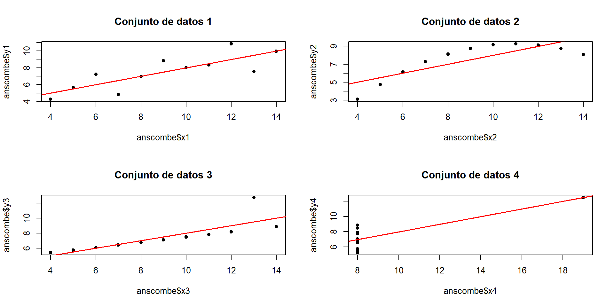
Ejemplos más espectaculares se pueden obtener con las funciones del paquete datasaurus, que permiten crear conjuntos de puntos de “formas” diferentes con los mismos estadísticos, y en particular la misma correlación. Empleando este paquete, hemos creado dos pares de vectores de datos dino y star, que hemos recogido en la siguiente tabla de datos. Esta tabla de datos tiene tres variables: una variable dataset que indica el conjunto de datos, y las variables x e y que dan las coordenadas de los puntos que forman cada conjunto de datos. Comprobaremos que los dos pares de vectores de datos tienen el mismo coeficiente de correlación (al menos hasta la séptima cifra decimal) y los dibujaremos.
datasaure=read.table("https://raw.githubusercontent.com/AprendeR-UIB/MatesII/master/Dades/Datasaurus.txt",header=TRUE,sep="\t")
str(datasaure)'data.frame': 284 obs. of 3 variables:
$ dataset: chr "dino" "dino" "dino" "dino" ...
$ x : num 55.4 51.5 46.2 42.8 40.8 ...
$ y : num 97.2 96 94.5 91.4 88.3 ...dino=datasaure[datasaure$dataset=="dino",2:3]
star=datasaure[datasaure$dataset=="star",2:3]
cor(dino$x,dino$y)[1] -0.0629611cor(star$x,star$y)[1] -0.0629611plot(dino,pch=20,cex=1.25)
plot(star,pch=20,cex=1.25)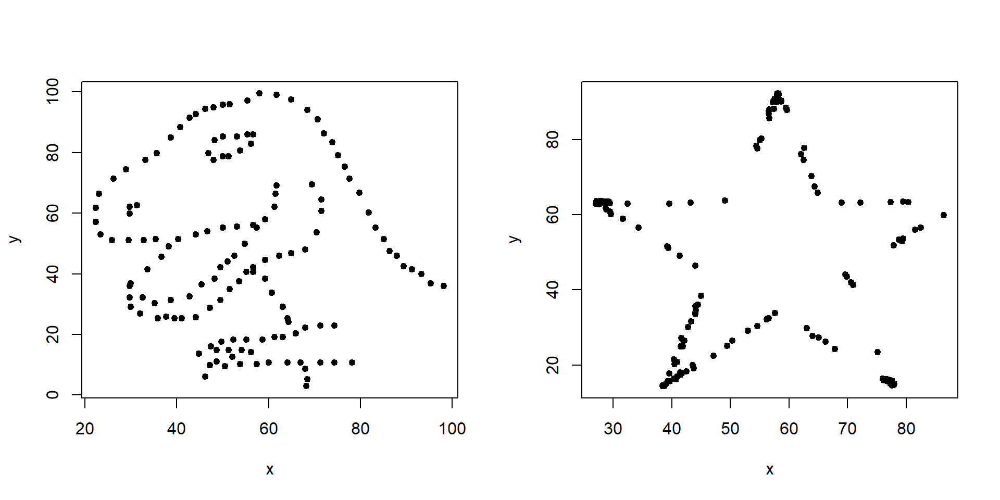
Ahora supongamos que tenemos una tabla de datos numéricos de la forma \[ \begin{array}{cccc} X_1 & X_2 & \ldots & X_p\\ \hline x_{1 1} & x_{1 2} &\ldots & x_{1 p}\\ x_{2 1} & x_{2 2} &\ldots & x_{2 p}\\ \vdots & \vdots & \ddots &\vdots\\ x_{n 1} & x_{n 2} &\ldots & x_{n p} \end{array} \]
donde cada columna representa los valores de cierta variable \(X_i\) y cada fila un individuo de una muestra de la población, de forma que la entrada \(x_{ij}\) de esta tabla es el valor de \(X_j\) sobre el individuo \(i\)-ésimo de la muestra.
Su matriz de correlaciones de Pearson es la matriz simétrica \[ \begin{pmatrix} 1 & R_{X_1,X_2} & \ldots & R_{X_1,X_p}\\ R_{X_2,X_1} & 1 & \ldots & R_{X_2,X_p}\\ \vdots & \vdots & \ddots & \vdots\\ R_{X_p,X_1} & R_{X_p,X_2} & \ldots & 1 \end{pmatrix} \]
Esta matriz de correlaciones se calcula con la función cor aplicada a la matriz o el data frame de variables numéricas que almacena la tabla de datos. Por ejemplo, la matriz de correlaciones de Pearson de la tabla de datos DF del Ejemplo que venimos trabajando es
cor(DF) BMI Chol Edad
BMI 1.00000000 0.6979141 0.07316517
Chol 0.69791406 1.0000000 -0.33145274
Edad 0.07316517 -0.3314527 1.000000002.4.3 Estimación
Las covarianzas de dos vectores obtenidos midiendo dos variables \(X,Y\) sobre una muestra aleatoria simple de sujetos de una población estiman la covarianza poblacional de las variables \(X,Y\) que han producido los vectores:
La covarianza muestral \(\widetilde{S}_{X,Y}\) siempre es un estimador no sesgado de la covarianza poblacional \(\sigma_{X,Y}\)
La covarianza \({S}_{X,Y}=\frac{n-1}{n}\widetilde{S}_{X,Y}\) es un estimador sesgado de la covarianza poblacional \(\sigma_{X,Y}\), con sesgo que tiende a 0, y es más eficiente que \(\widetilde{S}_{X,Y}\)
La covarianza \(S_{X,Y}\) es el estimador máximo verosímil de \(\sigma_{X,Y}\) cuando la distribución conjunta de las variables \(X,Y\) es la normal bivariante que estudiaremos próximamente.
La correlación de Pearson de dos vectores obtenidos midiendo dos variables continuas \(X,Y\) sobre una muestra aleatoria simple de sujetos de una población estima la correlación poblacional de las variables \(X,Y\). En concreto:
- \(R_{X,Y}\) es un estimador máximo verosímil de \(\rho_{X,Y}\) cuando la distribución conjunta de \(X,Y\) se normal bivariante. se un estimador sesgado, pero su sesgo tiende a 0.
2.4.4 Correlación de Spearman
La correlación de Pearson mide específicamente la tendencia de dos variables continuas a depender linealmente la una de la otra. Si no esperamos que esta dependencia lineal exista, o si nuestras variables son discretas o simplemente ordinales, emplear la correlación de Pearson para analizar la relación entre dos variables no es lo más adecuado. Entre las propuestas alternativas, la más popular es la correlación de Spearman.
Intuitivamente, la correlación de Spearman mide la tendencia que si \(x_i>x_j\), pase que \(y_i>y_j\). Su valor es 1 si, para todos \(y,j\), \[ x_i>x_j\Longleftrightarrow y_i>y_j \] y su valor es -1 si, para todo \(i,j\), \[ x_i>x_j\Longleftrightarrow y_i<y_j \] Cuanto más se acerca la correlación de Spearman a 1 (o -1), para más parejas de índices \((i,j)\) tales que \(x_i>x_j\) se tiene que \(y_i>y_j\) (\(y_i<y_j\), si se acerca a -1).
Formalmente, la correlación de Spearman de dos vectores \(X\) e \(Y\) se define como la correlación de Pearson de los vectores de rangos de \(X\) e \(Y\). El vector de rangos de un vector \(X\) se obtiene sustituyendo cada valor de \(X\) por su posición en el vector ordenado de menor a mayor, y en caso de empates asignando a grupos de valores empatados la media de las posiciones que ocuparían. Por ejemplo, el vector de rangos de
\[ x=(4,5,1,5,1,3,4,4) \] es \[ (5,7.5,1.5,7.5,1.5,3,5,5) \] ¿Cómo hemos calculado este vector?
- Primero asignamos a cada valor del vector su posición si estuvieran ordenados de menor a mayor, y en caso de empate por ahora los ordenaremos de izquierda a derecha: \[ \begin{array}{r|cccccccc} x & 4& 5 & 1 & 5 & 1 & 3 & 4 & 4\\ \hline \text{Posició} & 4 & 7 & 1 & 8 & 2 & 3 & 5 & 6\\ \end{array} \]
- Ahora, para asignar los rangos finales:
- El rango de los dos elementos 1 de \(x\) es la media de las posiciones 1, 2 del vector ordenado: 1.5.
- Como que solo hay un 3 en \(x\), su rango es su posición en el vector ordenado: 3.
- El rango de los tres elementos 4 es la media de las posiciones 4, 5 y 6 del vector ordenado: 5.
- Finalmente, el rango de los dos elementos 5 es la media de las posiciones 7, 8 del vector ordenado: 7.5.
\[ \begin{array}{r|cccccccc} x & 4& 5 & 1 & 5 & 1 & 3 & 4 & 4\\ \hline \text{Posició} & 4 & 7 & 1 & 8 & 2 & 3 & 5 & 6\\ \hline \text{Rang} & 5 & 7.5 & 1.5 & 7.5 & 1.5 & 3 & 5 & 5 \end{array} \]
Por cierto, con R el vector de rangos se calcula con la función rank:
rank(c(4,5,1,5,1,3,4,4))[1] 5.0 7.5 1.5 7.5 1.5 3.0 5.0 5.0Con R, la correlación de Spearman se calcula directamente con la función cor especificando el parámetro method="spearman". (El valor por defecto del parámetro method es "pearson" y por eso no lo indicamos cuando calculamos la correlación de Pearson.)
Ejemplo Consideremos los vectores BMI y Chol del ejemplo que venimos trabajando. Lo primero que haremos será calcular sus vectores de rangos:
\[ \begin{array}{|c|c||c|c|} \hline BMI & \text{Rangs} & Chol& \text{Rangs} \\\hline\hline 18.3& 1 & 170& 1 \\ 24.4&4.5 & 202 & 2\\ 24.6&6 & 215& 5 \\ 24.4&4.5 & 218& 6\\ 22.2&3 & 210& 3.5\\ 19.5&2 & 210& 3.5\\\hline \end{array} \]
Por tanto, la correlación de Spearman de \[ \mathit{BMI}=(18.3, 24.4, 24.6, 24.4, 22.2, 19.5)\mbox{ i }\mathit{Chol}=(170, 202, 215, 218, 210, 210) \] es la correlación de Pearson de \[ (1, 4.5, 6, 4.5, 3, 2)\mbox{ i }(1, 2, 5, 6, 3.5, 3.5) \]
Comprobémoslo:
cor(BMI,Chol,method="spearman")[1] 0.6470588cor(c(1,4.5,6,4.5,3,2),c(1,2,5,6,3.5,3.5))[1] 0.64705882.5 Contrastes de correlación
En un contraste de correlación de dos variables poblacionales continuas \(X\) e \(Y\), la hipótesis nula es que no hay correlación entre las dos variables, lo cual traduce que no hay ninguna relación entre ellas. \[ \left\{ \begin{array}{ll} H_0: & \rho_{XY}=0\\ H_1: & \rho_{XY}> 0\text{ o }\rho_{XY}< 0\text{ o }\rho_{XY}\neq 0 \end{array}\right. \]
Si en un contraste de correlación rechazamos la hipótesis nula, en particular concluimos que las variables \(X\) e \(Y\) son dependientes (porque si fueran independientes, su correlación seria 0).
No explicaremos cómo se hace a mano este contraste ni qué hipótesis tienen que satisfacer las variables poblacionales para que el resultado sea fiable. Si estáis interesados en el detalle, podéis consultar la correspondiente entrada de la Wikipedia. Simplemente tenéis que saber que se efectúa con la función cor.plot. Su sintaxis es similar a la de las otras funciones que efectúan contrastes.
Ejemplo Queremos contrastar si hay correlación positiva entre el BMI y el nivel de colesterol de un adulto sano, con un nivel de significación del 5%.
Variables poblacionales de interés:
- \(\mathit{BMI}\): “Tomamos un adulto sano y anotamos su BMI”
- \(\mathit{Chol}\): “Tomamos un adulto sano y anotamos el nivel de colesterol en mg/l”
Contrast: \[ \left\{ \begin{array}{ll} H_0: & \rho_{\textit{BMI,Chol}}=0\\ H_1: & \rho_{\textit{BMI,Chol}}>0 \end{array}\right. \]
Empleamos las muestras de BMI y Chol del Ejemplo que venimos trabajando.
cor.test(BMI,Chol,alternative="greater")
Pearson's product-moment correlation
data: BMI and Chol
t = 1.949, df = 4, p-value = 0.06155
alternative hypothesis: true correlation is greater than 0
95 percent confidence interval:
-0.08621998 1.00000000
sample estimates:
cor
0.6979141 Conclusión: No hemos obtenido evidencia estadísticamente significativa que el BMI y el nivel de colesterol de un adulto sano tengan correlación positiva (test de correlación, p-valor 0.06, IC para \(\rho\) 95% [-0.086 a 1]).
Cuidado La conclusión es que no hemos obtenido evidencia que el BMI y el nivel de colesterol tengan correlación positiva en la población de los adultos sanos. No en nuestra muestra, que sí que ha dado correlación positiva. Recordad que los contrastes siempre se refieren a la población.
2.6 Gráficos para datos multidimensionales
2.6.1 Otro gráfico para datos bivariantes
El boxplot bivariante es un gráfico de dispersión que incluye dos elipses estimadas, la interior que contiene aproximadamente el 50% de los datos y la exterior que contiene aproximadamente el 95% de los datos. Este tipo de gráficos nos ayuda a localizar datos atípicos. Veamos un ejemplo con los datos de los pingüinos.
library(tidyverse)
library(MVA)
library(palmerpenguins)
a2<- penguins %>%
select(body_mass_g,bill_length_mm) %>%
na.omit %>% as.matrix()
bvbox(a2,xlab = "Peso del pingüino en gr",
ylab = "Longitud del pico en mm",
pch = 19, cex = 1.25, col = "red")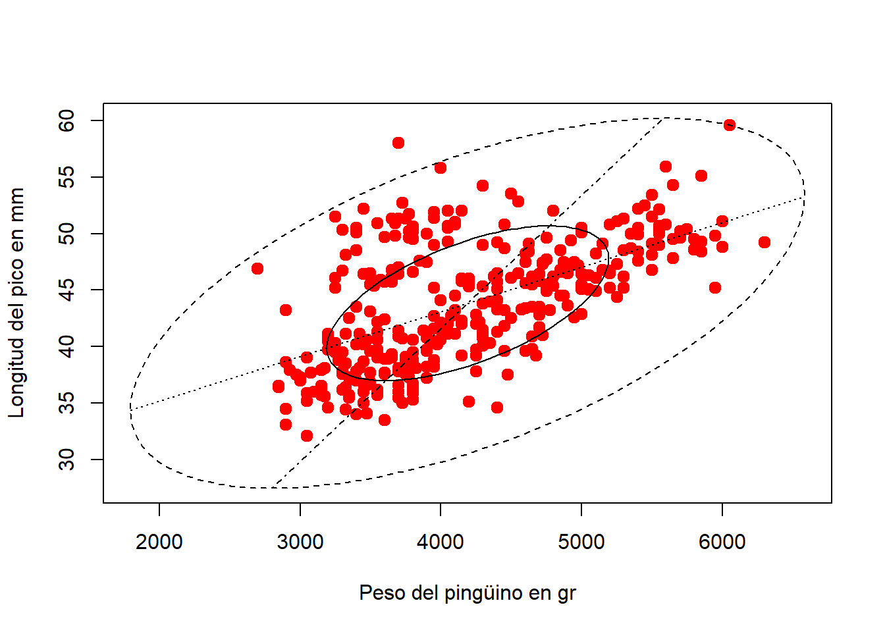
Las dos rectas dentro de las elipses del gráfico anterior son estimaciones de la recta de regresión.La recta más oscura es la habitual de mínimos cuadrados utilizando todas las observaciones. La recta más clara es una estimación más robusta que reduce la influencia de cualquier valor extremo.
2.6.2 Matriz de dispersión
Es posible ver los gráficos de dispersión por pares entre diversas variables cuantitativas utilizando una matriz. Se puede generar utilizando la función “pairs()” de R base. Veamos un ejemplo con nuestros datos de pingüinos.
a<-penguins %>%
select(3:7) %>%
na.omit
pairs(a,
col = c("red", "blue")[as.integer(a$sex)],
pch = 18)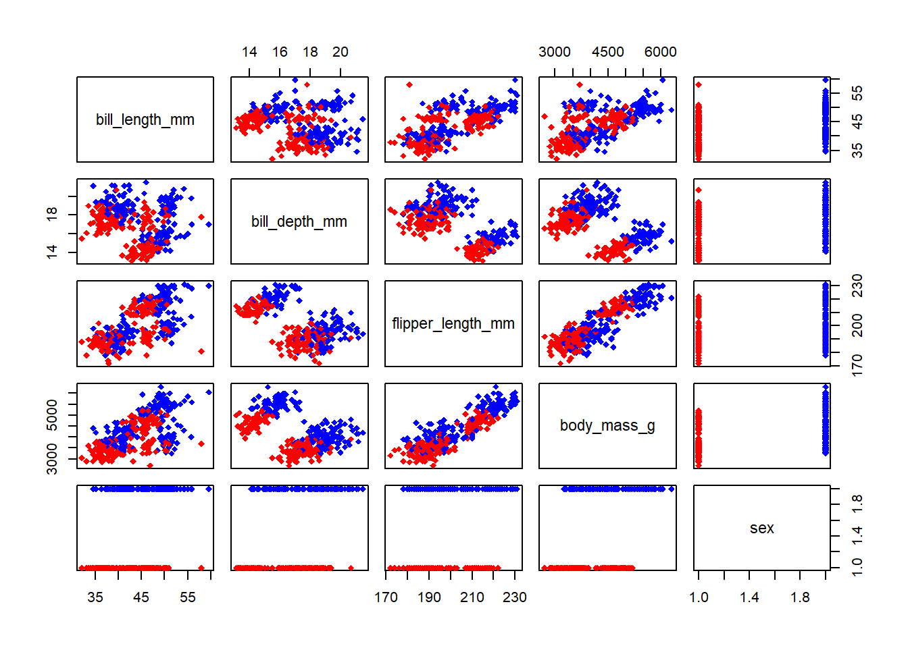
Existen muchas otras funciones para crear matrices de gráficos de dispersión. Una que nos gusta es ggpairs() del paquete GGally.
library(GGally)
ggpairs(a)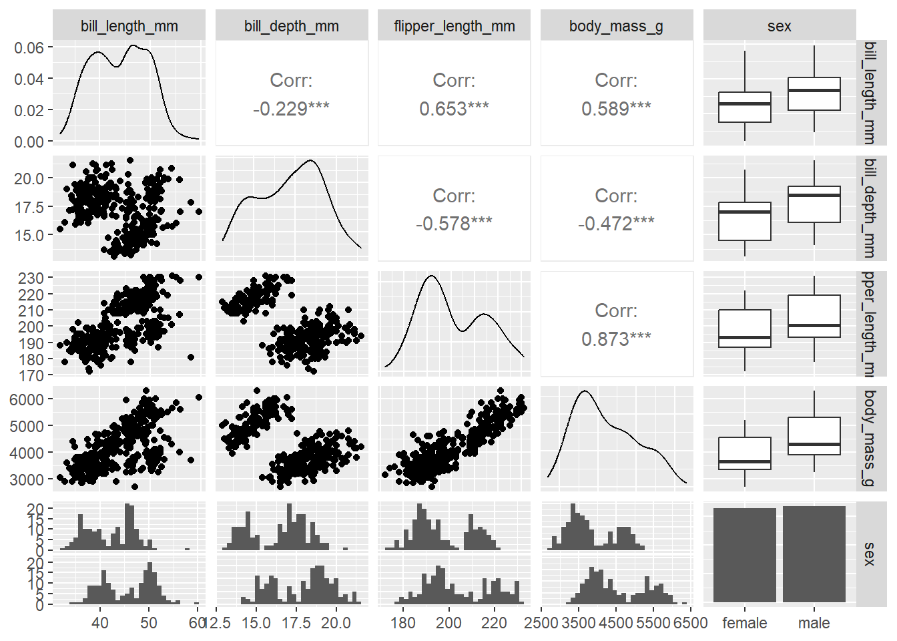
Por defecto, la diagonal principal de la matriz contiene la curva de densidad para cada variable. Por debajo de la diagonal principal se muestran los gráficos de dispersión y la correlación (para las variables cuantitativas) o el cruce entre variables si se trata de una variable categórica.
2.6.3 Caras de Chernoff
Cada variable del conjunto de datos se usa para representar una característica de la cara. Chernoff usó hasta 18 variables para representar diferentes rasgos faciales como cabeza, nariz, ojos, cejas, boca y orejas. El gráfico de Chernoff tiene como ventaja la facilidad humana para reconocer patrones de caras. El inconveniente es que la representación es muy dependiente de las variables escogidas para representar cada rasgo. Por ejemplo: la boca y la forma de la cabeza son rasgos más llamativos que las orejas o la longitud de la nariz, por tanto, el mismo conjunto puede sugerir distintos patrones de similitud entre las observaciones. Veamos un ejemplo.
library("aplpack")
b<- penguins %>%
filter(species=="Adelie",
island=="Torgersen",
sex=="female",
year==2007)
faces(b[,3:6],face.type = 1, scale =TRUE,print.info = TRUE)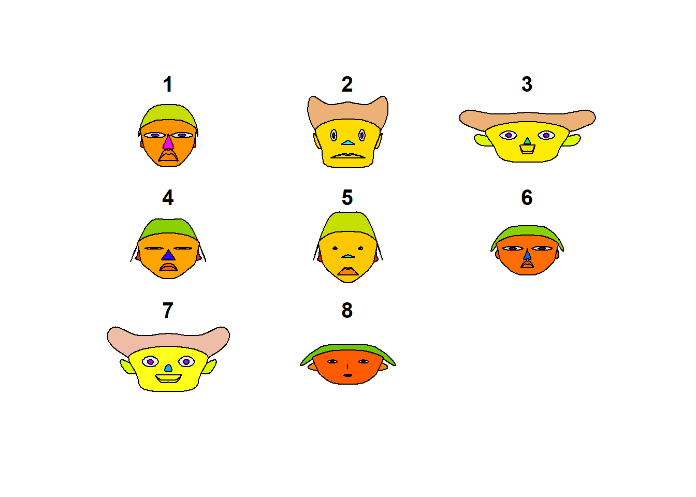
effect of variables:
modified item Var
"height of face " "bill_length_mm"
"width of face " "bill_depth_mm"
"structure of face" "flipper_length_mm"
"height of mouth " "body_mass_g"
"width of mouth " "bill_length_mm"
"smiling " "bill_depth_mm"
"height of eyes " "flipper_length_mm"
"width of eyes " "body_mass_g"
"height of hair " "bill_length_mm"
"width of hair " "bill_depth_mm"
"style of hair " "flipper_length_mm"
"height of nose " "body_mass_g"
"width of nose " "bill_length_mm"
"width of ear " "bill_depth_mm"
"height of ear " "flipper_length_mm"Alternativamente, podemos representar cada elemento por una figura geométrica, donde las similitudes entre figuras indican las similitudes entre los elementos.
stars(a[,1:4], key.loc = c(44, 1.5),cex=0.45,
labels=row.names(a[,1:4]), draw.segments=TRUE)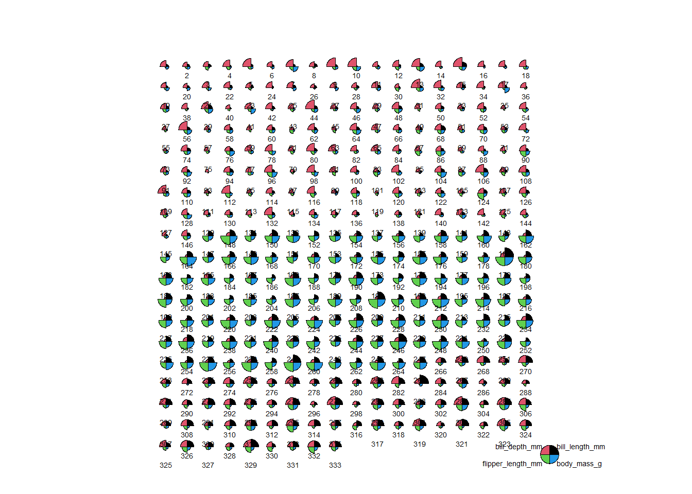
Por supuesto que ggplot2 nos da opciones más modernas de este tipo de gráficos. Ver, por ejemplo:
2.6.4 Matriz de correlaciones
Las correlaciones por pares entre varias variables se muestran visualmente mediante un mapa de calor de la matriz de correlaciones. La función ggcorrplot() del paquete “ggcorrplot” de R puede utilizarse para construirlo. A continuación se muestra un ejemplo que utiliza el conjunto de datos de los pingüinos:
library(ggcorrplot)
penguins %>%
select(3:6) %>%
na.omit(.) %>%
cor(.) %>%
ggcorrplot(., hc.order = TRUE,
type = "lower",
colors = c("#6D9EC1",
"yellow", "#E46726"))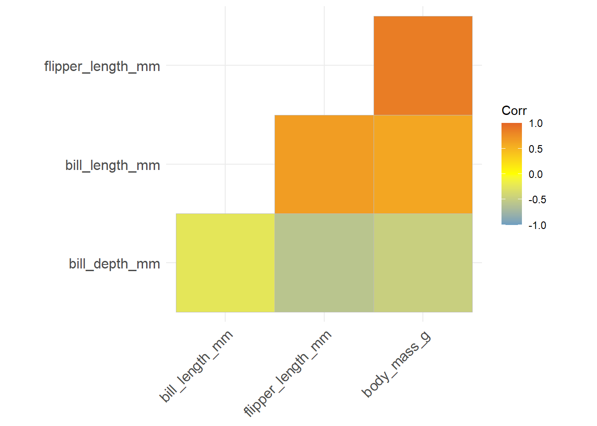
En el gráfico, el color naranja denota correlaciones positivas y el gris correlaciones negativas. Al especificar hc.order,las variables también se ordenan.
2.6.5 Gráficos de mosaico
Hasta ahora, hemos explorado métodos para visualizar relaciones entre variables cuantitativas. Pero, ¿qué hacemos si hay más de dos variables categóricas?
Un método consiste en utilizar gráficos de mosaico, en los que las frecuencias de una tabla de contingencia multidimensional se representan mediante regiones rectangulares anidadas que son proporcionales a su frecuencia de celda. La función mosaicplot() de la librería vcd proporciona características más amplias que la de R base.
Si se añade la opción opción shade=TRUE colorea la figura basándose en los residuos estandarizados de un modelo loglineal para la tabla. La idea central detrás de un modelo loglineal es modelar las probabilidades de ocurrencia de cada categoría en la tabla de contingencia y el modelo se ajusta utilizando técnicas de regresión logística.
library(vcd)
a<- penguins %>%
select(island,species,sex) %>%
na.omit()
a2<- table(a)
mosaicplot(a2,shade=TRUE, main="")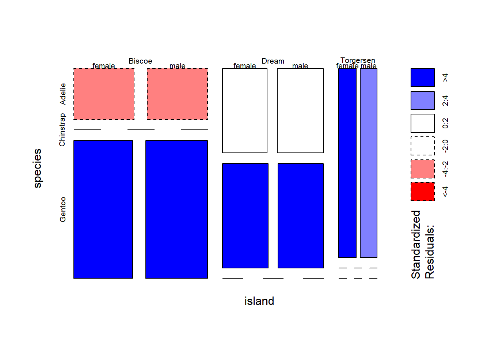
2.7 Práctica 3
De las fuentes de datos que se citan abajo o de alguna otra fuente que sea de libre acceso, seleccionad un conjunto de datos que os guste y pensad en responder una pregunta a partir de estos. El conjunto de datos debe cumplir con las siguientes condiciones:
- Que contenga al menos un par de variables cualitativas (una ordinal y otra nominal).
- Que contenga al menos cinco variables cuantitativas, cuantas más mejor.
- Si tenéis que unir varias tablas de datos, usad las herramientas que hemos presentado de tidyverse.
- Algunas fuentes de datos:
Cread un repositorio en Github para vuestro grupo con un nombre que sea fácilmente identificable para los profesores de la asignatura. Cread un proyecto nuevo en RStudio conectado al repositorio anterior que contenga los documentos/scripts y presentación del proyecto.
El proyecto debe incluir:
Resumen del problema que trataréis, su contexto y la fuente de datos. Describid cada una de las variables que conforman la base de datos del estudio. Plantead una pregunta u objetivo del proyecto.
Tibble o dataframe con la base de datos limpia. Indicad los pasos e instrucciones que habéis utilizado para lograr convertir vuestros datos en
tidy data(si aplica).Un análisis multivariante exploratorio de los datos con visualizaciones apropiadas y su interpretación en el contexto del problema.
La estimación del vector de medias y la matriz de covarianza/correlación de las variables cuantitativas, así como un contraste de correlación.
Escribid una conclusión con los resultados importantes del análisis.
Preparad una presentación de máximo 15 minutos en la que cada miembro del grupo exponga una parte del trabajo.
Cada grupo tiene 15 minutos para exponer y 5 para responder las dudas y preguntas de los compañeros y de los profesores de la asignatura. La calificación se realizará por medio de la rúbrica publicada en Aula Digital que podéis encontrar en la sección “Bloque I”.
El peso de la evaluación es el siguiente: 0.8 \(\cdot\) Nota de la Exposición + 0.2 \(\cdot\) Nota del repositorio$. Para calcular la nota de la Exposición, se tomará la calificación media de vuestros compañeros (excluidos los integrantes del propio grupo) y la asignada por los profesores. Si la diferencia de notas entre los profesores y los compañeros es mayor a 2 puntos, contará únicamente la nota de los profesores.
2.8 Distancias
Como hemos mencionado, la información multivariante es una matriz de datos de orden \(n \times p\), con \(n\) el número de filas y \(p\) el número de variables consideradas. A veces, para determinar cuáles observaciones multivariantes son semejantes y cuáles no, se emplean matrices de distancias o similaridades. Dependiendo del contexto, hay que seleccionar la más apropiada para obtener resultados confiables. A continuación, presentamos algunas de las distancias más utilizadas.
2.8.1 Distancia euclídea
La distancia euclídea entre dos realizaciones \(\underline{X}=(x_1,\ldots,x_p)\) e \(\underline{Y}=(y_1,\ldots,y_p)\) se define como
\[d_E(\underline{X},\underline{Y})=\sqrt{\displaystyle\sum_{k=1}^p (x_k-y_k)^2}\]
Esta distancia equivale a la suma de las longitudes de los segmentos que unen cada par de posiciones. La siguiente imagen muestra el perfil de dos usuarios en base a las valoraciones que han hecho de 10 ítems.
library(tidyverse)
usuario_a <- c(4, 4.5, 4, 7, 7, 6, 5, 5.5, 5, 6)
usuario_b <- c(4, 4.5, 4, 7, 7, 6, 5, 5.5, 5, 6) + 3
datos <- data.frame(usuario = rep(c("a", "b"), each = 10),
valoracion = c(usuario_a, usuario_b),
item = 1:10)
ggplot(data = datos, aes(x = as.factor(item), y = valoracion,
colour = usuario)) +
geom_path(aes(group = usuario)) +
geom_point() +
geom_line(aes(group = item), colour = "firebrick", linetype = "dashed") +
labs(x = "item") +
theme_bw() + theme(legend.position = "bottom")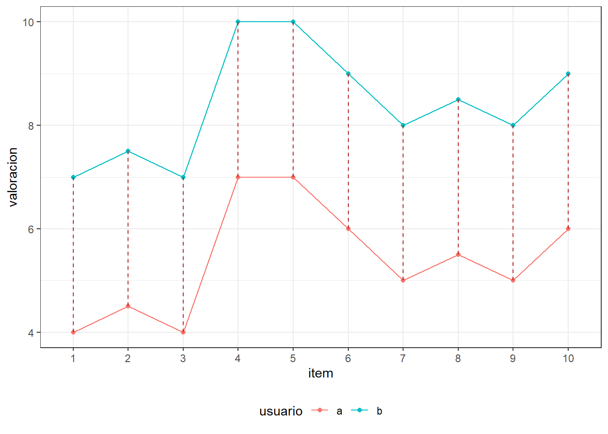
La distancia euclideana entre los dos usuarios es:
sqrt(sum((usuario_a-usuario_b)^2))[1] 9.486833Las funciones dist() de R base y get_dist de la librería factoextra se pueden utilizar para calcular las distancias entre todas las filas (observaciones) de una matriz o data frame. Por defecto, las funciones devuelven una matriz triangular inferior.
Ejemplo: Para el data frame de los pingüinos, calculamos las distancias euclideanas entre las ocho hembras de la especie Adelie que fueron registradas en Torgensen el año 2007.
p_ATf<- penguins %>%
filter(species=="Adelie",
island=="Torgersen",
sex=="female",
year==2007) %>% select(3:5)
dist(p_ATf) 1 2 3 4 5 6 7
2 9.055385
3 7.774960 4.318565
4 5.051732 14.071247 12.291867
5 4.312772 13.030733 11.968709 2.424871
6 3.093542 10.664427 8.140025 4.614109 5.412024
7 9.176056 1.886796 2.844293 14.052758 13.293607 10.288343
8 5.568662 12.488795 9.332738 5.441507 7.037755 2.489980 11.825819library(factoextra)
get_dist(p_ATf, stand=TRUE) 1 2 3 4 5 6 7
2 1.819868
3 3.293836 2.530682
4 1.077437 2.510238 3.181155
5 1.039894 2.343332 3.710845 1.048543
6 1.443639 2.415665 2.600833 1.244814 2.113671
7 2.840218 1.637506 1.061075 2.989495 3.228280 2.641200
8 2.750331 3.317954 2.286750 2.271394 3.259136 1.338307 2.850519Las distancias grandes indican mayores disimilitudes entre las observaciones.
Observa que hemos calculado la distancia euclideana con la función get_dist pero estandarizando los datos especificando stand=TRUE, es decir, para cada variable (columna), restamos el valor medio de la columna y dividimos por la desviación típica de la columna, lo cual tiene sentido hacerlo cuando las variables del conjunto de datos están en escalas diferentes. El problema con la distancia euclideana es que no toma en cuenta la correlación entre las variables consideradas.
2.8.2 Distancia de Minkowski
Otra distancia que podría ser considerada es la de Minkowski, cuya definición es la siguiente:
\[d_{M_q}(\underline{X}_i,\underline{X}_j)=\left(\displaystyle\sum_{k=1}^p|x_{ik}-x_{jk}|^q \right)^{1/q}, \;\; q>0\] Presenta los mismos inconvenientes que \(d_E\) \((d_E = d_{M_2})\).
Si \(q=1\), se le llama distancia de Manhattan
Si \(q \rightarrow \infty\), se le llama distancia dominante \[d_{M_\infty}(\underline{X}_i,\underline{X}_j)=\max\{ |x_{i1}-x_{j1}|,\ldots,|x_{ip}-y_{jp}|\}\]
La siguiente imagen muestra una comparación entre la distancia euclídea (segmento azul) y la distancia de Manhattan (segmento rojo y verde) en un espacio bidimensional. Existen múltiples caminos para unir dos puntos con el mismo valor de distancia de Manhattan, ya que su valor es igual al desplazamiento total en cada una de las dimensiones.
datos <- data.frame(observacion = c("a", "b"), x = c(2,7), y = c(2,7))
manhattan <- data.frame(
x = rep(2:6, each = 2),
y = rep(2:6, each = 2) + rep(c(0,1), 5),
xend = rep(2:6, each = 2) + rep(c(0,1), 5),
yend = rep(3:7, each = 2))
manhattan_2 <- data.frame(
x = c(2, 5, 5, 7),
y = c(2, 2, 4, 4),
xend = c(5, 5, 7, 7),
yend = c(2, 4, 4, 7))
ggplot(data = datos, aes(x = x, y = y)) +
geom_segment(aes(x = 2, y = 2, xend = 7, yend = 7), color = "blue", size = 1.2) +
geom_segment(data = manhattan, aes(x = x, y = y, xend = xend, yend = yend),
color = "red", size = 1.2) +
geom_segment(data = manhattan_2, aes(x = x, y = y, xend = xend, yend = yend),
color = "green3", size = 1.2) +
geom_point(size = 3) +
theme(panel.grid.minor = element_blank(),
panel.grid.major = element_line(size = 2),
panel.background = element_rect(fill = "gray",
colour = "white",
size = 0.5, linetype = "solid"))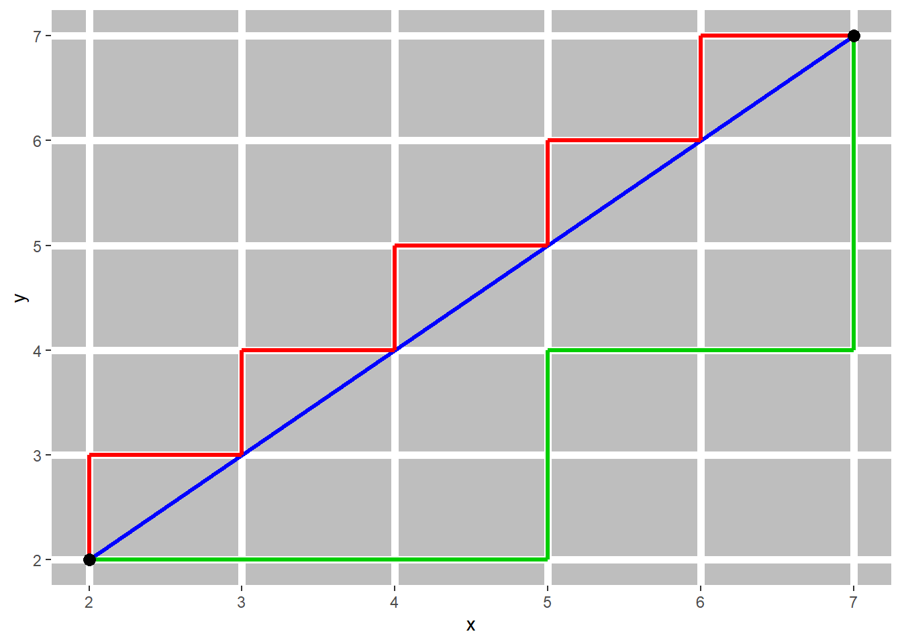
2.9 Distancias basadas en la correlación
Las distancias basadas en la correlación son útiles utilizadas cuando la similitud queremos establecerla en términos del patrón o forma y no de desplazamiento o magnitud; por ejemplo en el análisis de datos de expresión génica.
\[d_{cor}(\underline{X}_i,\underline{X}_j)=1-Cor(\underline{X}_i,\underline{X}_j)\]
donde la correlación puede ser de distintos tipos (Pearson, Spearman, Kendall…)
En la siguiente imagen mostramos el perfil de 3 usuarios. Veamos qué ocurre si utilizamos la distancia euclideana y la de correlación de Pearson para compararlos.
usuario_a <- c(4, 4.5, 4, 7.5, 7, 6, 5, 5.5, 5, 6)
usuario_b <- c(4, 4.5, 4, 7.5, 7, 6, 5, 5.5, 5, 6) + 4
usuario_c <- c(5, 5.5, 4.8, 5.4, 4.7, 5.6, 5.3, 5.5, 5.2, 4.8)
datos <- data.frame(usuario = rep(c("a", "b", "c"), each = 10),
valoracion = c(usuario_a, usuario_b, usuario_c),
item = 1:10)
ggplot(data = datos, aes(x = as.factor(item),
y = valoracion,
colour = usuario)) +
geom_path(aes(group = usuario)) +
geom_point() +
labs(x = "item") +
theme_bw() +
theme(legend.position = "bottom")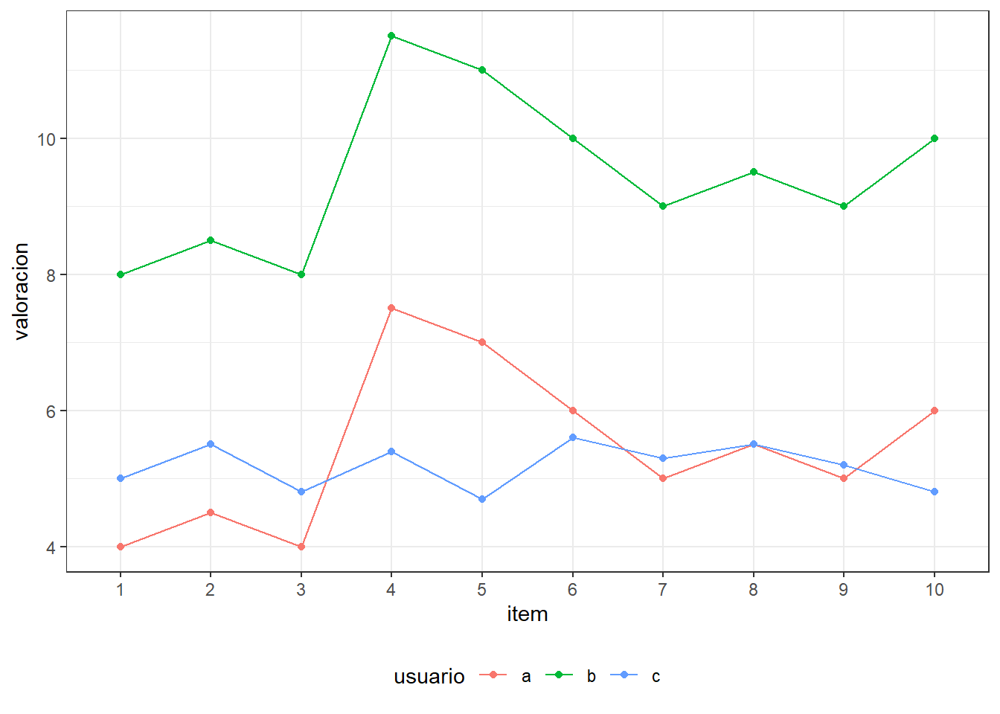
dist(x = rbind(usuario_a, usuario_b, usuario_c), method = "euclidean") usuario_a usuario_b
usuario_b 12.64911
usuario_c 3.75100 13.988211 - cor(x = cbind(usuario_a, usuario_b, usuario_c), method = "pearson") usuario_a usuario_b usuario_c
usuario_a 0.0000000 0.0000000 0.9466303
usuario_b 0.0000000 0.0000000 0.9466303
usuario_c 0.9466303 0.9466303 0.0000000De acuerdo a la distancia euclideana, los usuarios a y c son los más similares, mientras que acorde a la correlación de Pearson, a y b son los más parecidos. Este ejemplo pone de manifiesto que no existe una única medida de distancia que sea mejor que las demás, sino que, dependiendo del contexto, una será más adecuada que otra.
2.10 Distancia de Mahalanobis
\[d^2_M \left( \underline{X}_i,\underline{X}_j \right)= \left(\underline{X}_i-\underline{X}_j \right)^t {\bf S}^{-1} \left(\underline{X}_i-\underline{X}_j\right),\]
donde \({\bf S}\) es la matriz de covarianzas muestrales de la matriz de datos \({\bf X}\).
Es adecuada como medida de discrepancia entre datos, porque:
Es invariante frente a transformaciones lineales invertibles de las variables.
\(d_E=d_M\) cuando \({\bf S}={\bf I}\) y \(d_K = d_M\) cuando \({\bf S}=diag(s^2_1,\ldots,s^2_p),\)
Esta distancia tiene en cuenta las correlaciones entre las variables.
No aumenta por el simple hecho de aumentar el número de variables registradas, sino que solamente aumentará cuando las nuevas variables no sean redundantes con respecto de la información aportada por las anteriores.
Esta es la distancia más utilizada cuando todas las variables son cuantitativas.
2.11 Distancias para variables binarias:
Si \(X_1,\ldots,X_p\) son variables que toman valores \(\{0,1\}\), existen muchos coeficientes de similaridad \(s_{ij}\) entre dos observaciones \(i,j\), calculados a partir de las frecuencias tales que \(a+b+c+d=p\), donde:
\(a\): el número de variables con respuesta 1 en ambos individuos,
\(b\): el número de variables con respuesta 0 en la observación \(i\) y con respuesta 1 en el individuo \(j\),
\(c\): el número de variables con respuesta 1 en la observación \(i\) y con respuesta 0 en la observación \(j\),
\(d\): el número de variables con respuesta 0 en ambos individuos.
Algunos coeficientes de similaridad son:
Sokal y Michener: \(s_{ij}=\frac{a+d}{p}\), Jaccard: \(s_{ij} =\frac{a}{a+b+c}\)
Aplicando uno de estos coeficientes a un conjunto de \(n\) objetos se obtiene una matriz de similaridades \({\bf S}=(s_{ij})_{n\times n}\)
Ejemplo: Se han medido 6 variables sobre 3 individuos:
| ind. | \(X_1\) | \(X_2\) | \(X_3\) | \(X_4\) | \(X_5\) | \(X_6\) |
|---|---|---|---|---|---|---|
| 1 | 1 | 1 | 0 | 0 | 1 | 1 |
| 2 | 1 | 1 | 1 | 0 | 0 | 1 |
| 3 | 1 | 0 | 0 | 1 | 0 | 1 |
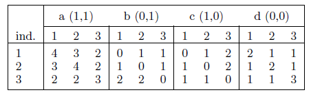
Las matrices de similaridad son: \[{\bf S}_{Sokal}=\left(\begin{array}{ccc} 1 & 0.6667 & 0.5\\ 0.667 & 1 & 0.5\\ 0.5 & 0.5 & 1 \end{array}\right), \;\;\; {\bf S}_{Jaccard}=\left(\begin{array}{ccc} 1 & 0.6 & 0.4\\ 0.6 & 1 & 0.4\\ 0.4 & 0.4 & 1 \end{array}\right) \]
2.12 Distancias para variables categóricas:
Se mide una variable categórica nominal con \(k\) niveles sobre una muestra de \(n = n_1+\cdots+n_g\) observaciones provenientes de \(g\) poblaciones diferentes. Se desea obtener una medida de disimilaridad entre estas poblaciones.
En estas condiciones, el vector de frecuencias de cada población \({\bf n}_{\alpha}=(n_{\alpha1},\ldots,n_{\alpha k})\), para \(\alpha=1,\ldots, g\), tiene una distribución conjunta multinomial con parámetros \((n_{\alpha}, {\bf p}_{\alpha})\), donde \(n_{\alpha}=n_{\alpha1}+\ldots +n_{\alpha k}\) y \({\bf p}_{\alpha}=(p_{\alpha 1},\ldots,p_{\alpha k}\) es el vector de probabilidades de los \(k\) niveles en la población \(\alpha\) (con \(p_{\alpha 1}+\ldots + p_{\alpha k}=1\)).
Ejemplo: La siguiente tabla contiene las proporciones génicas observadas entre 10 poblaciones. Observa que las filas suman 1.
| Población | grupo A | grupo AB | grupo B | grupo O |
|---|---|---|---|---|
| francesa | 0.21 | 0.06 | 0.06 | 0.67 |
| checa | 0.25 | 0.04 | 0.14 | 0.57 |
| germánica | 0.22 | 0.06 | 0.08 | 0.64 |
| vasca | 0.19 | 0.04 | 0.02 | 0.75 |
| china | 0.18 | 0.00 | 0.15 | 0.67 |
| ainu | 0.23 | 0.00 | 0.28 | 0.49 |
| esquimal | 0.30 | 0.00 | 0.06 | 0.64 |
| negra USA | 0.10 | 0.06 | 0.13 | 0.71 |
| española | 0.27 | 0.04 | 0.06 | 0.63 |
| egipcia | 0.21 | 0.05 | 0.20 | 0.54 |
Dos medidas de disimilaridad para este tipo de variables son:
Distancia de Bhattacharyya \[d^2_{ij}=arccos\left( \displaystyle\sum_{l=1}^k \sqrt{p_{il} \; p_{jl}}\right)\]
Distancia de Balakrishnan-Sanghvi \[d^2_{ij}= 2 \displaystyle\sum_{l=1}^k \frac{(p_{il}-p_{jl})^2}{p_{il}+p_{jl}} \]
Para los datos del ejemplo, la matriz de distancias de Bhattacharyya es:
poblacion=c("francesa","checa","germánica","vasca","china","ainu","esquimal","negra USA","española","egipcia")
grupoA=c(0.21,0.25,.22,.19,.18,.23,.3,.1,.27,.21)
grupoAB=c(.06,.04,.06,.04,.00,.00,.00,.06,.04,.05)
grupoB=c(.06,.14,.08,.02,.15,.28,.06,.13,.06,.2)
grupoO=c(.67,.57,.64,.75,.67,.49,.64,.71,.63,.54)
datos=data.frame(poblacion,grupoA,grupoAB,grupoB,grupoO)library(philentropy)
distance(datos[,-1], method = "bhattacharyya") v1 v2 v3 v4 v5 v6
v1 0.0000000000 0.012324966 0.0009483429 0.007777165 0.04156128 0.08081738
v2 0.0123249656 0.000000000 0.0066949713 0.035943482 0.02529075 0.03431210
v3 0.0009483429 0.006694971 0.0000000000 0.013834658 0.03731750 0.06762516
v4 0.0077771654 0.035943482 0.0138346582 0.000000000 0.05279229 0.11642553
v5 0.0415612774 0.025290748 0.0373174959 0.052792291 0.00000000 0.01879186
v6 0.0808173801 0.034312099 0.0676251647 0.116425530 0.01879186 0.00000000
v7 0.0347713474 0.030975271 0.0343982089 0.034376078 0.01808704 0.04888218
v8 0.0172057129 0.022070358 0.0157266766 0.032991841 0.03716560 0.07012655
v9 0.0032054844 0.009334768 0.0030312958 0.011543973 0.03561201 0.06782787
v10 0.0244823653 0.004028694 0.0160452869 0.057509566 0.03136123 0.02962590
v7 v8 v9 v10
v1 0.03477135 0.01720571 0.003205484 0.024482365
v2 0.03097527 0.02207036 0.009334768 0.004028694
v3 0.03439821 0.01572668 0.003031296 0.016045287
v4 0.03437608 0.03299184 0.011543973 0.057509566
v5 0.01808704 0.03716560 0.035612005 0.031361231
v6 0.04888218 0.07012655 0.067827866 0.029625898
v7 0.00000000 0.06655156 0.020625956 0.052957776
v8 0.06655156 0.00000000 0.030016960 0.020075979
v9 0.02062596 0.03001696 0.000000000 0.024651208
v10 0.05295778 0.02007598 0.024651208 0.000000000Las poblaciones más cercanas (según la distancia de Battacharyya) son la francesa y la germánica con \(d_{1,3}=0.00095\). Mientras que los más alejados son las poblaciones francesa y ainu con \(d_{1,6}=0.08082\).
2.13 Distancias para variables mixtas
Cuando disponemos de un conjunto de observaciones sobre variables tanto cuantitativas como cualitativas.
Se define la distancia de Gower como \(d^2_{ij}=1-s_{ij}\), donde \[s_{ij}=\frac{\sum_{k=1}^{p_1}(1-|x_{ik}-x_{jk}|/G_k)+a+\alpha}{p_1+(p_2-d)+p_3}\] es el coeficiente de similaridad de Gower,
\(p_1\) es el número de variables cuantitativas continuas,
\(p_2\) es el número de variables binarias,
\(p_3\) es el número de variables cualitativas (no binarias),
\(a\) es el número de coincidencias (1,1) en las variables binarias,
\(d\) es el número de coincidencias (0,0) en las variables binarias,
\(\alpha\) es el número de coincidencias en las variables cualitativas (no binarias) y
\(G_h\) es el rango de la \(k\)-ésima variable cuantitativa.
Ejemplo: Considera 7 variables registradas sobre 50 jugadores de la liga española de fútbol.
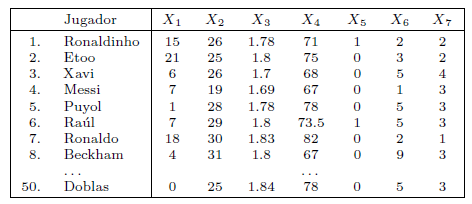
\(X_1\) es el número de goles marcados, \(X_2\) edad (en años),
\(X_3\) altura (m), \(X_4\) peso (kg),
\(X_5\) pierna buena del jugador (1=drecha, 0=izquierda),
\(X_6\) nacionalidad: (1=Argentina, 2=Brasil, 3=Camerun, 4=Italia, 5=España, 6=Francia, 7=Uruguay, 8=Portugal, 9=Inglaterra).
\(X_7\) tipo de estudios (1=sin estudios, 2=básicos, 3=medios, 4=superiores)
futbol=read.table("datos/jugadores.txt")
library(StatMatch)
distancia=gower.dist(futbol)
head(distancia,2) [,1] [,2] [,3] [,4] [,5] [,6] [,7]
[1,] 0.0000000 0.2422439 0.4123377 0.3910534 0.3887085 0.2007576 0.3412698
[2,] 0.2422439 0.0000000 0.3331530 0.3317100 0.2575758 0.3510101 0.1863276
[,8] [,9] [,10] [,11] [,12] [,13] [,14]
[1,] 0.4585137 0.4370491 0.3645382 0.4132395 0.3329726 0.3098846 0.5128066
[2,] 0.3555195 0.3181818 0.2334055 0.2229437 0.2736291 0.1747835 0.3419913
[,15] [,16] [,17] [,18] [,19] [,20] [,21]
[1,] 0.3879870 0.3872655 0.3910534 0.3324315 0.3823954 0.333153 0.4880952
[2,] 0.3088023 0.2323232 0.2321429 0.1659452 0.2869769 0.463925 0.3930375
[,22] [,23] [,24] [,25] [,26] [,27] [,28]
[1,] 0.2436869 0.3890693 0.3311688 0.3154762 0.3551587 0.4462482 0.3059163
[2,] 0.3715729 0.2341270 0.2718254 0.4462482 0.2521645 0.2754329 0.4366883
[,29] [,30] [,31] [,32] [,33] [,34] [,35]
[1,] 0.3977273 0.1803752 0.2561328 0.3612915 0.3450577 0.247114 0.3481241
[2,] 0.2427850 0.3309885 0.1369048 0.2063492 0.2500000 0.403860 0.4788961
[,36] [,37] [,38] [,39] [,40] [,41] [,42]
[1,] 0.4202742 0.3151154 0.4197330 0.3250361 0.2247475 0.2023810 0.2676768
[2,] 0.2783189 0.1969697 0.3405483 0.2061688 0.3786075 0.4446248 0.1484488
[,43] [,44] [,45] [,46] [,47] [,48] [,49]
[1,] 0.1801948 0.3403680 0.3762626 0.1524170 0.4889971 0.3986291 0.2987013
[2,] 0.4224387 0.2453102 0.2812049 0.3318903 0.3340548 0.2278139 0.1935426
[,50]
[1,] 0.4224387
[2,] 0.2516234Con la librería stats de R base puedes calcular la distancia: “euclidean”, “maximum”, “manhattan”, “canberra”, “binary” o “minkowski”.
La función distance()de la libreria philentropy es capaz de calcular 46 diferentes distancias/similaridades.
getDistMethods() [1] "euclidean" "manhattan" "minkowski"
[4] "chebyshev" "sorensen" "gower"
[7] "soergel" "kulczynski_d" "canberra"
[10] "lorentzian" "intersection" "non-intersection"
[13] "wavehedges" "czekanowski" "motyka"
[16] "kulczynski_s" "tanimoto" "ruzicka"
[19] "inner_product" "harmonic_mean" "cosine"
[22] "hassebrook" "jaccard" "dice"
[25] "fidelity" "bhattacharyya" "hellinger"
[28] "matusita" "squared_chord" "squared_euclidean"
[31] "pearson" "neyman" "squared_chi"
[34] "prob_symm" "divergence" "clark"
[37] "additive_symm" "kullback-leibler" "jeffreys"
[40] "k_divergence" "topsoe" "jensen-shannon"
[43] "jensen_difference" "taneja" "kumar-johnson"
[46] "avg" 2.14 Visualización de matrices de distancias
Una solución sencilla para visualizar las matrices de distancia es utilizar la función fviz_dist() de la librería factoextra. Otros métodos especializados, como la agrupación jerárquica aglomerativa o el mapa de calor, las presentaremos más adelante.
Ejemplo: Visualizamos la tabla de los jugadores de fútbol.
library(factoextra)
fviz_dist(as.dist(distancia))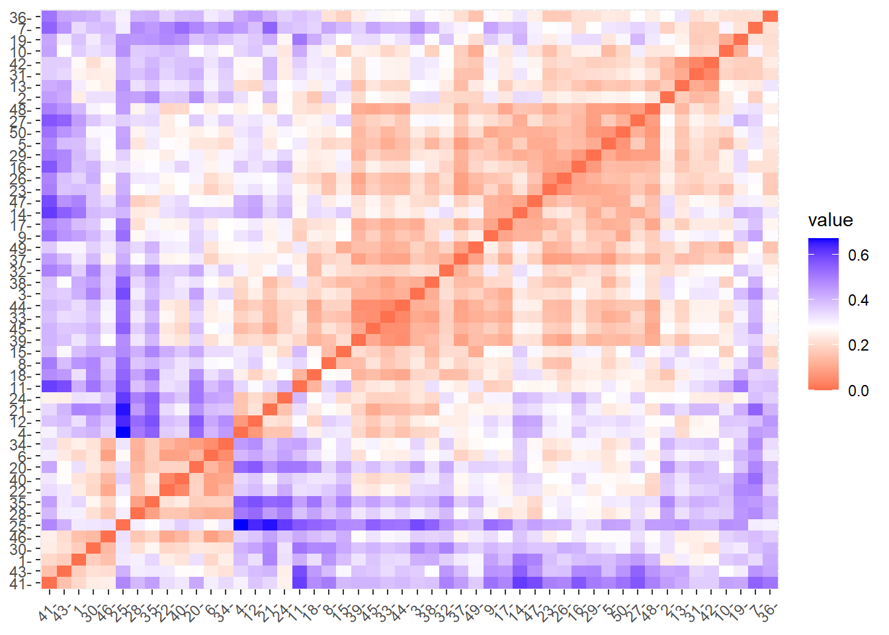
Si el color es rojo, la similitud es alta (es decir, distancia cero). Si el color es azul, la similitud es baja. El nivel de color es proporcional al valor de la distancia entre las observaciones. Se han ordenado a los jugadores por similitud.
Ejemplo: Otro ejemplo que podéis consultar son los mapas de calor que utilizamos en BIOCOM (grupo de investigación de la UIB en Biología Computacional y Bioinformática) para presentar las diferencias entre kernels (“distancias”) para comparar grafos del metabolismo entre organismos Figura 3 - Exploring the expressiveness of abstract metabolic networks
Observamos una buena separación entre animales, plantas y hongos en todos los mapas de calor. Los protistas están separados, pero en general están más cerca de los hongos que del resto de Eucariotas. Además, en todos los mapas de calor, los animales están bien separados de los demás reinos y muestran un patrón interno adicional que merece un análisis más detallado. También cabe destacar que todos los kernels ponen de manifiesto una marcada diferencia entre los animales y las plantas. Las plantas están más cerca de los hongos que de los animales.